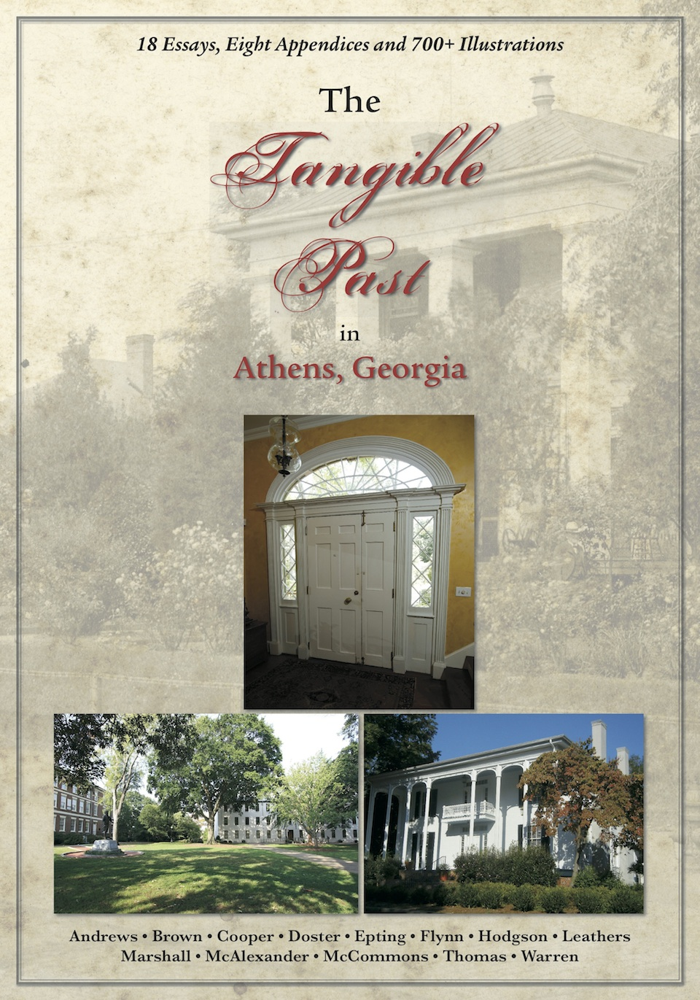

Sample Pages from "The Tangible Past in Athens, Georgia"

How Athens Came to Be
Three Oconee Street Historic Houses
The Live Yankees in Athens
The Bookends of Downtown
The Victorian House
The Young Harris House
Henry Hull Carlton
Ms. Leonard's Letter
Members of the Barrow Family
The Five Points Suburbs
Family of Cornelia & Manasseh McGinty
Prince Avenue Map
Greek Revival Architecture
Davison-Nicholson Company
Monroe Morton
John E. Talmadge House
Moving the Finley Street House
A Time of Extremes
Thomass R. R. Cobb House
Twenty-five Cobb Family Houses in Athens
Olivia Newton Cobb House
Howell Cobb House
Elijah Clarke Monument
Grove Seminary/St. Joseph's Catholic Church
Steam Tannery
Order Form